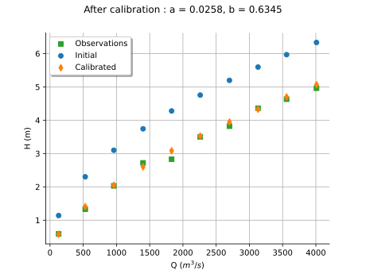

NonLinearLeastSquaresCalibration¶
- class NonLinearLeastSquaresCalibration(*args)¶
Non-linear least-squares calibration algorithm.
- Parameters:
- model
Function The parametric function to be calibrated.
- inputObservations2-d sequence of float
The sample of input observations. Can have dimension 0 to specify no observations.
- outputObservations2-d sequence of float
The sample of output observations.
- startingPointsequence of float
Initial parameter value used as the starting point of the optimization.
- model
Methods
BuildResidualFunction(model, ...)Build a residual function given a parametric model, input and output observations.
Return the bootstrap size used to sample the posterior distribution.
Accessor to the object's name.
Accessor to the input data to be fitted.
getModel()Accessor to the model to be fitted.
getName()Accessor to the object's name.
Return the optimization algorithm used for the computation.
Accessor to the output data to be fitted.
Accessor to the parameter prior distribution.
Get the result structure.
Return the starting point used for the optimization.
hasName()Test if the object is named.
run(*args)Launch the algorithm.
setBootstrapSize(bootstrapSize)Set the bootstrap size used to sample the posterior distribution.
setName(name)Accessor to the object's name.
setOptimizationAlgorithm(algorithm)Set the optimization algorithm used for the computation.
setResult(result)Accessor to optimization result.
Notes
NonLinearLeastSquaresCalibration estimates the parameter of a model by minimizing the sum of squared residuals between the model predictions and the observed outputs. Under standard assumptions on the observation errors (see Code calibration for more details), the resulting estimator coincides with the maximum likelihood estimator for Gaussian errors. Unlike
LinearLeastSquaresCalibration, this algorithm does not require the model to depend linearly on the parameter.The prior distribution of the parameter is a noninformative prior emulated using a flat
Normalcentered on the startingPoint and with a variance equal to SpecFunc.Infinity.The posterior distribution of the parameter reflects the uncertainty in the parameter estimate arising from observation errors, under the assumed model (and the prior information). If the key NonLinearLeastSquaresCalibration-BootstrapSize in the
ResourceMapis set to zero, the posterior distribution is evaluated based on a linear approximation of the model at the optimum. This corresponds to using theLinearLeastSquaresCalibrationalgorithm at the optimum. However, if the key NonLinearLeastSquaresCalibration-BootstrapSize in theResourceMapis set to a nonzero positive integer, bootstrap resampling of the observations is used to estimate the distribution of the calibrated parameters. The calibrated parameter distribution is approximated based on a kernel density estimate obtained from the bootstrap sample. By default, a bootstrap algorithm is used.The output (observation) error is modeled as a Normal random variable whose variance is estimated from the calibration residuals. This is performed whatever the value of the NonLinearLeastSquaresCalibration-BootstrapSize parameter i.e., it is independent from the distribution of the parameter.
If least squares optimization algorithms are enabled, then the algorithm used is the first found by Build of
OptimizationAlgorithm. Otherwise, the algorithmTNCis used.Please read Code calibration for more details.
Examples
Calibrate a nonlinear model using non-linear least-squares:
>>> import openturns as ot >>> ot.RandomGenerator.SetSeed(0) >>> m = 10 >>> x = [[0.5 + i] for i in range(m)] >>> inVars = ['a', 'b', 'c', 'x'] >>> formulas = ['a + b * exp(c * x)'] >>> model = ot.SymbolicFunction(inVars, formulas) >>> p_ref = [2.8, 1.2, 0.5] >>> params = [0, 1, 2] >>> modelX = ot.ParametricFunction(model, params, p_ref) >>> y = modelX(x) >>> y += ot.Normal(0.0, 0.05).getSample(m) >>> startingPoint = [1.0]*3 >>> algo = ot.NonLinearLeastSquaresCalibration(modelX, x, y, startingPoint) >>> algo.run() >>> print(algo.getResult().getParameterMAP()) [2.773...,1.203...,0.499...]
- __init__(*args)¶
- static BuildResidualFunction(model, inputObservations, outputObservations)¶
Build a residual function given a parametric model, input and output observations.
- Parameters:
- model
Function Parametric model.
- inputObservations2-d sequence of float
Input observations associated to the output observations.
- outputObservations2-d sequence of float
Output observations.
- model
- Returns:
- residual
Function Residual function.
- residual
Notes
Given a parametric model
![F_{\theta}:\Rset^\inputDim \rightarrow \Rset^p]() with
parameter
with
parameter ![\theta \in \Rset^m]() , a sample of input points
, a sample of input points
![(\vect{x}_i)_{i=1, \dots, \sampleSize}]() and the associated output
and the associated output
![(\vect{y}_i)_{i=1, \dots, \sampleSize}]() ,
the residual function
,
the residual function ![f : \Rset^m \rightarrow \Rset^{p \sampleSize}]() is defined by:
is defined by:![f(\theta)=
\begin{pmatrix}
F_{\theta}(\vect{x}_1) - \vect{y}_1 \\
\vdots \\
F_{\theta}(\vect{x}_\sampleSize) - \vect{y}_\sampleSize
\end{pmatrix}]()
for all
.
The residual vector is obtained by stacking the residuals associated with
all observations.
- getBootstrapSize()¶
Return the bootstrap size used to sample the posterior distribution.
- Returns:
- sizeint
Bootstrap size used to sample the posterior distribution. A value of 0 means that no bootstrap is performed and that the posterior distribution is approximated using a linearization of the model around the optimum, equivalent to applying
LinearLeastSquaresCalibration.
- getClassName()¶
Accessor to the object’s name.
- Returns:
- class_namestr
The object class name (object.__class__.__name__).
- getInputObservations()¶
Accessor to the input data to be fitted.
- Returns:
- data
Sample The input data to be fitted.
- data
- getName()¶
Accessor to the object’s name.
- Returns:
- namestr
The name of the object.
- getOptimizationAlgorithm()¶
Return the optimization algorithm used for the computation.
- Returns:
- algo
OptimizationAlgorithm Optimization algorithm used for the computation.
- algo
- getOutputObservations()¶
Accessor to the output data to be fitted.
- Returns:
- data
Sample The output data to be fitted.
- data
- getParameterPrior()¶
Accessor to the parameter prior distribution.
- Returns:
- prior
Distribution The parameter prior distribution.
- prior
- getResult()¶
Get the result structure.
- Returns:
- resCalibration
CalibrationResult The structure containing all the results of the calibration problem.
- resCalibration
Notes
The structure contains all the results of the calibration problem.
- getStartingPoint()¶
Return the starting point used for the optimization.
- Returns:
- startingPoint
Point Starting point used for the optimization.
- startingPoint
- hasName()¶
Test if the object is named.
- Returns:
- hasNamebool
True if the name is not empty.
- run(*args)¶
Launch the algorithm.
Notes
It launches the algorithm and creates a
CalibrationResult, structure containing all the results.
- setBootstrapSize(bootstrapSize)¶
Set the bootstrap size used to sample the posterior distribution.
- Parameters:
- sizeint
Bootstrap size used to sample the posterior distribution. A value of 0 means that no bootstrap is performed and that the posterior distribution is approximated using a linearization of the model around the optimum, equivalent to applying
LinearLeastSquaresCalibration.
- setName(name)¶
Accessor to the object’s name.
- Parameters:
- namestr
The name of the object.
- setOptimizationAlgorithm(algorithm)¶
Set the optimization algorithm used for the computation.
- Parameters:
- algo
OptimizationAlgorithm Optimization algorithm to use for the computation.
- algo
- setResult(result)¶
Accessor to optimization result.
- Parameters:
- result
CalibrationResult Result class.
- result
Examples using the class¶


Calibrate a parametric model: a quick-start guide to calibration